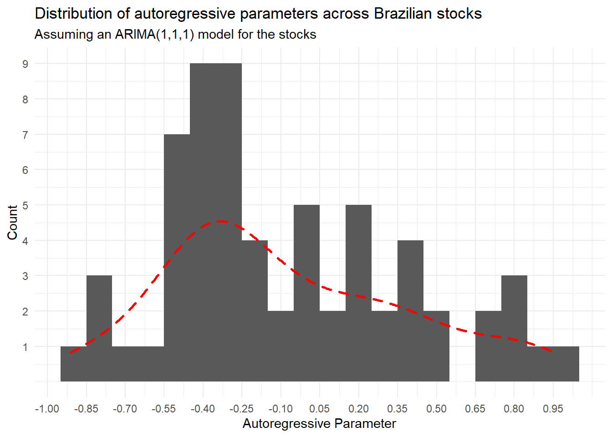

![]()
packages.to.load=c("ggplot2","dplyr","PerformanceAnalytics","quantmod","xts","purrr","glue")
#Load all packages
sapply(packages.to.load,library,character.only = TRUE)
#Load the list of Assets
Assets<-read.csv('Assets.csv',sep=';',encoding = 'UTF-8',header = TRUE,stringsAsFactors = FALSE)[,1]Whenever downloading data from Yahoo! Finance using quantmod, I’ve always found it difficult to organize a collection of objects in cases where the number of tickers requested is large. Notwithstanding, not only for the sake of organization, sometimes we want to perform calculations that span a large set of assets and visualize results in an aggregate fashion. For example, say that one wants estimate how persistent prices for several stocks are using past information. The naivest way to do it would be to loop over several tickers, collect the metric, and append to a data.frame() that will be used to analyze metrics (i.e, using histograms and summary statistics).
I happened to find purrr (see documentation) to be a handy companion for tasks like this. When using its functional programming features, not only we can have an easier way to work with multiple tickers, but also work with a much cleaner environment – as no one wants to have 100+ xts objects in our environment everytime when running the code.
To that matter, this notebook showcases how to collect and organize data from Yahoo! Finance and perform calculations that span across all tickers. This can be very useful, for example, when creating an automated screening system in which, based on a set of technical indicators, can easily run a screening process in order to select a bundle of assets for a given trading strategy.
I am going to present a simple example using a set of brazilian traded stocks in Bovespa. All the stocks are presented in the auxiliary .csv file, Assets.csv, and can be changed to accomodate any stock available in Yahoo! Finance servers. This file contains approximataely 75 unique tickers from the Brazilian Stock Market that were tradable back in 2019. What makes it difficult to use quantmod’s capabilities is the fact that some tickers are not available and/or do not have data for the requested period. Whenever running a for loop and iterate through these tickers, one might come across a warning or an error message that crashes the task. To overcome such difficulty, I have developed some wrappers using the tryCatch() approach.
Important Remark: Yahoo! Finance generally offers data with splits and dividends adjustments and therefore may not be the same as the brokerage information. In this sense, recommendations must also be analyzed through technical indicators presented on the brokerage account. Additionally, one can change the log in order to use any other provider of financial data of the same format, such as AlphaVantage, which also has an API support into the quantmod library.
Loading Necessary Libraries
Although this is totally up to you, I’ve selected a few packages that make the overall task easier.
Getting the data and putting into a clean list structure
After loading the data, we can iterate through our list of tickers to organize the information. One important callout is that whenever we want to retrieve some technical indications (for example, from the TTR package), we need to ensure that there are no NAs in our data. For that, we’ll wrap our call using the na.locf() call to repeat the latest information available:
#Let's take a look at the structure of the file
Assets%>%head(5)[1] "ABEV3.SA" "AZUL4.SA" "B3SA3.SA" "BBAS3.SA" "BBDC3.SA"#create empty data.frames to collect downloaded and error cases
downloaded=data.frame()
errors=data.frame()
#Getting Data: now, we are going to request for chunks of 5 assets per time in Yahoo Finance server.
adjust_ticker_data <- function(ticker){
return(na.locf(Cl(ticker)))
}
Tickers=list()
for (i in Assets){
Data=suppressWarnings(
tryCatch({
adjust_ticker_data(getSymbols(i,
auto.assign = FALSE,
from='2019-01-01',to=Sys.Date())
)},
error = function(e){
assign("errors",rbind(errors,i),envir=.GlobalEnv)
}
)
)
#If successful, we'll be able to have a xts object to get information on prices:
if(is.xts(Data)){
downloaded=downloaded%>%rbind(i)
Bands = do.call(merge,lapply(Data,BBands))
RSI = do.call(merge,lapply(Data,RSI))
SMA= do.call(merge,lapply(Data,SMA))
Tickers[[i]]=list(Data=Data,
BBands=Bands,
RSI=RSI,
SMA=SMA)
#Clear from memory to avoid if conditions to be satisfied with past iterations
rm(Data)
}
}
#Retrieve status information:
message(glue('Data not downloaded for the following tickers: {errors}.'))Data not downloaded for the following tickers: c("BRML3.SA", "BTOW3.SA", "IGTA3.SA", "LAME4.SA", "SMLS3.SA", "TIMP3.SA", "VIVT4.SA", "VVAR3.SA", "HGTX3.SA", "GNDI3.SA", "SULA11.SA"). message(glue('Successfully downloaded data for the following tickers: {downloaded}.'))Successfully downloaded data for the following tickers: c("ABEV3.SA", "AZUL4.SA", "B3SA3.SA", "BBAS3.SA", "BBDC3.SA", "BBDC4.SA", "BBSE3.SA", "BRAP4.SA", "BRFS3.SA", "BRKM5.SA", "CCRO3.SA", "CIEL3.SA", "CMIG4.SA", "CSAN3.SA", "CSNA3.SA", "CVCB3.SA", "CYRE3.SA", "ECOR3.SA", "EGIE3.SA", "ELET3.SA", "ELET6.SA", "EMBR3.SA", "ENBR3.SA", "EQTL3.SA", "FLRY3.SA", "GGBR4.SA", "GOAU4.SA", "GOLL4.SA", "HYPE3.SA", "IRBR3.SA", "ITSA4.SA", "ITUB4.SA", "JBSS3.SA", "KLBN11.SA", "COGN3.SA", "LREN3.SA", "MGLU3.SA", "MRFG3.SA", "MRVE3.SA", "MULT3.SA", "PETR3.SA", "PETR4.SA",
"QUAL3.SA", "RADL3.SA", "RAIL3.SA", "RENT3.SA", "SANB11.SA", "SBSP3.SA", "SUZB3.SA", "UGPA3.SA", "USIM5.SA", "VALE3.SA", "WEGE3.SA", "YDUQ3.SA", "ODPV3.SA", "PARD3.SA", "GRND3.SA", "ARZZ3.SA", "HAPV3.SA", "CRFB3.SA", "TOTS3.SA", "PSSA3.SA", "UGPA3.SA", "EZTC3.SA", "GFSA3.SA").What is very interesting when collecting information using lists is that we can easily organize data in a streamlined fashion that is very flexible when working with different data structure dimensions. For example, when inspecting the newly created Tickers list, it contains:
- A first layer of 64 named lists, one for each ticker that has been successfully downloaded;
- One additional layer for the adjusted closing data; and
- Additional layers for each technical indicator
Due to the way that it was structured, these objects do not need to hold a specific row \(\times\) column dimension, as every object is stored in a single nested list, making our life much easies when dealing with multiple tickers.
Using list information with functional programming
Using purrr capabilities for functional programming can make overwhelming tasks that involve multiple tickers much easier. More specifically, map and its companions allow us to map functions across different lists, collect objects, and pipe it for other analysis and/or visualizations. Say, for example, that we want to understand what is the distribution of price persistence across all tickers. We can run an \(ARIMA(p,d,q)\) model for each ticker, collec the coefficients, and then plot an histogram to understand the distribution of the autoregressive component, \(p\).
In order to do that, we will create a new list that will extract all Data components of the nested ticker lists. With that, we will use a combination of the map_* family functions from purrr to feed the results directly into a ggplot chart – everything without creating a single new object!
#Using map_* + ggplot to analyze the distribution of the autoregressive parameter
suppressWarnings(lapply(Tickers,'[[',"Data")%>%
map(arima,order=c(1,1,1)))%>%
map("coef")%>%
map_df('ar1')%>%t()%>%as.data.frame()%>%
ggplot(aes(x=V1))+
geom_histogram(binwidth = 0.1)+
theme_minimal()+
labs(x='Autoregressive Parameter',
y='Count',
title='Distribution of autoregressive parameters across Brazilian stocks',
subtitle='Assuming an ARIMA(1,1,1) model for the stocks')+
scale_y_continuous(breaks=seq(1,10,1))+
scale_x_continuous(breaks=seq(-1,1,0.15))+
geom_density(aes(y=0.075*..count..),size=1,col='red',linetype='dashed')
Final Thoughts
This example outlines just a simple application of functional programming for a situation where there are several nested lists holding diverse structures. However, applications go far beyond than that, and it is something that I would definitely recommend to anyone that is working with stock price data that spans multiple tickers.
I hope you enjoy this post!
Citation
BibTeX citation:
@online{s. macoris2023,
author = {S. Macoris, Lucas},
title = {Automating a Panel Creation of {Yahoo!} {Finance} Tickers
Using {R}},
date = {2023-05-20},
url = {https://lsmacoris.github.io/posts/2023-05-20-Ibovespa-Screening},
langid = {en}
}
For attribution, please cite this work as:
S. Macoris, Lucas. 2023. “Automating a Panel Creation of Yahoo!
Finance Tickers Using R.” May 20, 2023. https://lsmacoris.github.io/posts/2023-05-20-Ibovespa-Screening.